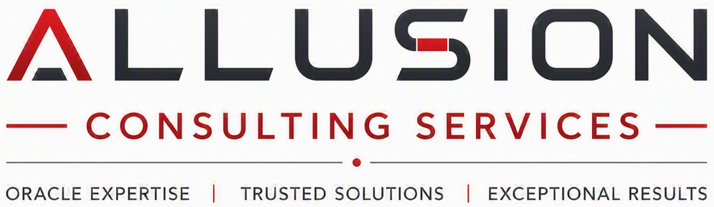

Allusion Consulting Services helps enterprises design, optimize, secure, and modernize Oracle Database and related platforms, whether they run on‑premises, in private cloud, or in hyperscale environments.
Modern enterprises rely on Oracle and other mission‑critical databases to power core applications, analytics, and regulatory reporting; those systems need expert architecture, performance tuning, and ongoing care to stay reliable and cost‑effective. [page:1][page:2][page:3]
We bring years of hands‑on experience with Oracle Database, Exadata, Data Guard, RAC, and middleware platforms, backed by strong knowledge of cloud infrastructure and graph technologies such as Neo4j. [page:1][page:2]
From initial architecture and capacity planning through performance audits, migrations, security hardening, and managed operations, we cover the full lifecycle of your data platforms. [page:1][page:2][page:3]
Our consulting engagements aim to reduce total cost of ownership, improve throughput and latency, strengthen security and compliance, and make your databases ready for future growth and cloud adoption. [page:1][page:2]
We design robust Oracle environments, including high‑availability setups, disaster recovery, and hybrid architectures that combine on‑premises, OCI, and other cloud platforms. [page:1][page:2][page:3]
Our team performs detailed performance audits, query and index optimization, memory and I/O tuning, and proactive monitoring to keep critical workloads stable during peak demand. [page:1][page:2][page:3]
We provide flexible DBA support, including 24×7 monitoring, patching, backup and recovery reviews, and part‑time coverage to complement your internal teams. [page:3]
While Oracle Database and middleware are at the core of our services, we also bring strong experience across graph databases, ETL pipelines, and cloud‑native platforms to help you modernize your data ecosystem. [page:1][page:2][page:3]